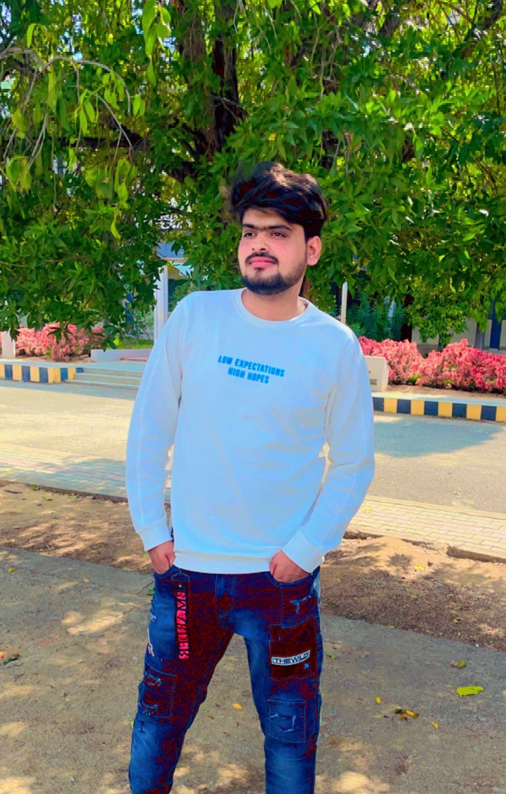

fasihuddin

Fasihuddin is a dedicated and enthusiastic student currently pursuing a Bachelor's in Computer Science and
Engineering (B.Tech CSE). With a keen interest in the world of technology and a passion for gaming, he stands at
the forefront of the digital frontier.
Throughout his academic journey, Fasihuddin has demonstrated a strong aptitude for computer science concepts,
programming languages, and software development. His commitment to excellence and constant pursuit of knowledge
have earned him accolades from both peers and faculty.
Beyond the world of academia, Fasihuddin finds solace and excitement in the realm of gaming. As an avid gamer,
he immerses himself in diverse gaming experiences, from action-packed adventures to strategic challenges. Gaming
serves not only as a source of entertainment but also as a platform to foster problem-solving skills, teamwork,
and creativity.
With a passion for technology and gaming, Fasihuddin is well-equipped to bridge the gap between theoretical
knowledge and practical applications. His aspiration to make meaningful contributions to the gaming industry
drives him to stay abreast of the latest trends and advancements in the field.
When not engrossed in his studies or gaming adventures, Fasihuddin enjoys connecting with like-minded individuals,
sharing gaming experiences, and participating in online gaming communities. His social nature and ability to forge
connections make him a valued team player in both virtual and real-world settings.
As he progresses through his B.Tech CSE program, Fasihuddin continues to grow, learn, and expand his horizons.
With a unique blend of technical expertise and a passion for gaming, he is poised to make a significant impact
in the exciting and ever-evolving landscape of technology and gaming.
- Video Gaming: Gaming is at the core of Fasihuddin's hobbies. He spends time playing a wide variety of
video games, ranging from action-adventure and role-playing games (RPGs) to competitive multiplayer games.
Whether it's exploring virtual worlds, strategizing in real-time battles, or engaging in cooperative gameplay
with friends, gaming is an essential part of his daily routine.
- Esports and Competitive Gaming: Fasihuddin may also follow and participate in esports events and
competitions. Watching professional players compete at the highest level in his favorite games could be an
exciting pastime for him, and he may even aspire to compete in esports tournaments himself.
- Game Development: Given his interest in gaming, Fasihuddin might also have an inclination towards game
development. He could be experimenting with game engines, learning programming languages, and creating his
own game prototypes or mods.
- Tech Enthusiast: Beyond gaming, Fasihuddin is likely to be interested in technology as a whole. He might
stay updated with the latest advancements in hardware, software, and gaming consoles to optimize his gaming
experience.
- Streaming and Content Creation: If Fasihuddin enjoys sharing his gaming experiences with others, he may be
into live streaming on platforms like Twitch or creating gaming content on YouTube. This allows him to
connect with a gaming community, share tips, and engage with fellow gamers.
- Social Gaming: Fasihuddin's love for gaming might also extend to social gaming with friends or online
communities. Playing games together, discussing strategies, and forming gaming clans are common social
activities for him.
- Physical Activities: Although gaming is his primary interest, Fasihuddin recognizes the importance of
physical well-being. He might engage in light exercises, walks, or sports to maintain a healthy lifestyle
and balance his gaming hobbies.
- Collectibles and Merchandise: As a dedicated gaming enthusiast, Fasihuddin might collect gaming merchandise,
memorabilia, or limited edition items related to his favorite games.
- Gaming Events and Conventions: Attending gaming events, conventions, or local LAN parties could also be
among his hobbies. These gatherings provide opportunities to connect with fellow gamers and experience the
gaming culture firsthand.
- Reading and Gaming Forums: To further enhance his knowledge and gaming skills, Fasihuddin might read gaming
guides, watch tutorials, and actively participate in gaming forums to exchange tips and tricks with the
gaming community.